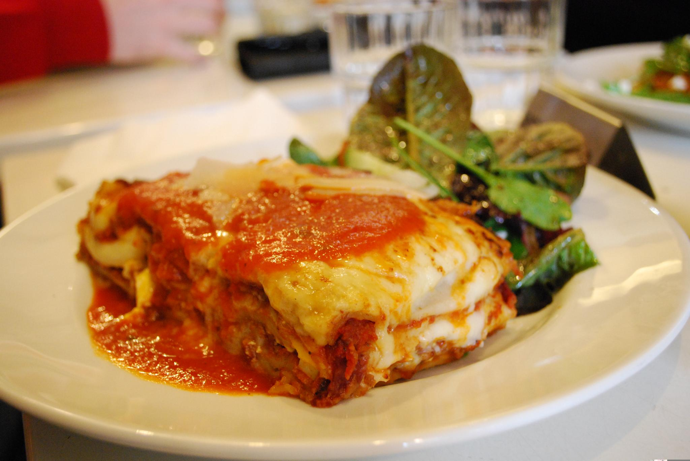

Lasagna a la française
Homepage

Description
This recipe adds a nice twist to classic lasagna by using a mix of 7 cheeses.
Ingredients
- flour
- water
- cheese
- passata
- olive oil
Steps
- Mix flour and water
- Dropwise additon of olive oil
- Cover in passata and cheese
- Bake at 400°C until burnt